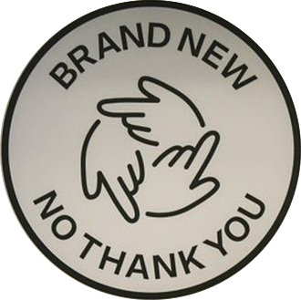
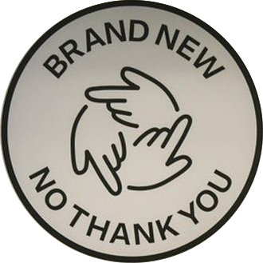

Une Solution ?
Allonger la durée de vie des appareils déjà en circulation, c'est lutter contre la surproduction d’appareils neufs.
En recyclant, rien ne se perd, rien ne se crée, tout se transforme.
Prise de conscience du consommateur,il recycle ses appareils en prend soin pour qu'ils durent dans le temps.
C'est participer à l'économie Circulaire : produire des biens et des services de manière durable, en limitant la consommation, le gaspillage des ressources et la production des déchets et rompre avec le modèle d’économie linéaire : extraire, fabriquer, consommer, jeter.
 

Greenwashing ?
Elles sont trop souventimportées depuis l'étranger les pièces défectueuses sont remplacées par d’autres pièces recyclées, mais très peu de transparence concernant la provenance de ces pièces.
Durée de vie limitée, qualité moindre, les pièces défectueuses peuvent être remplacées par des composants qui ne sont pas celles du constructeur, ce sont des pièces compatibles, génériques, chinoises ou copies.